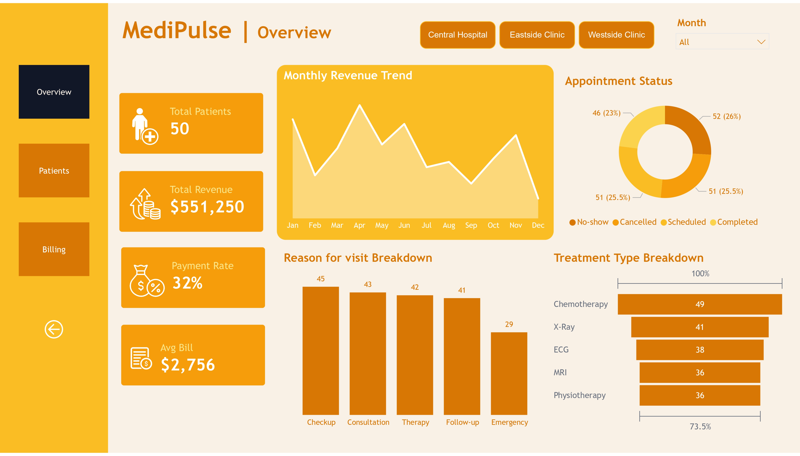
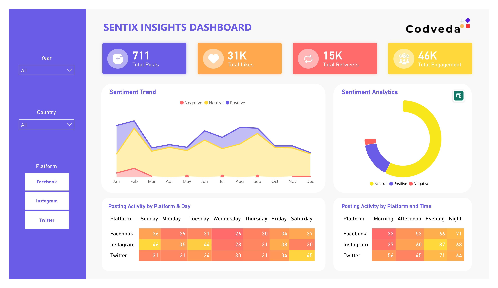
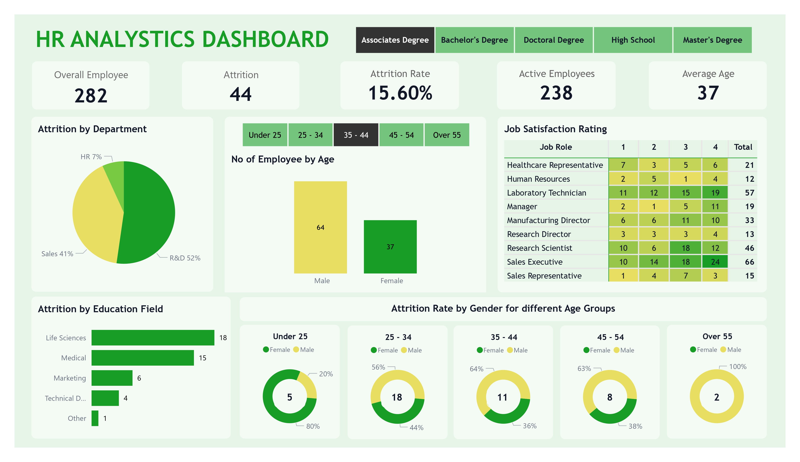
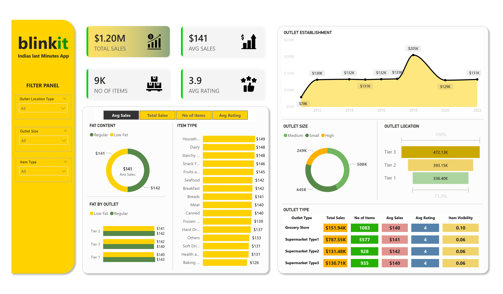
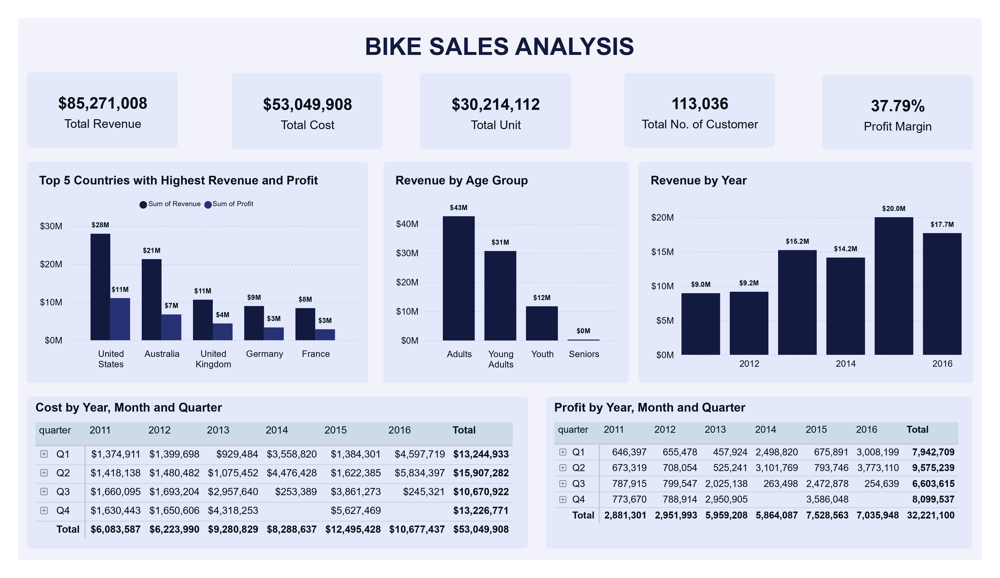
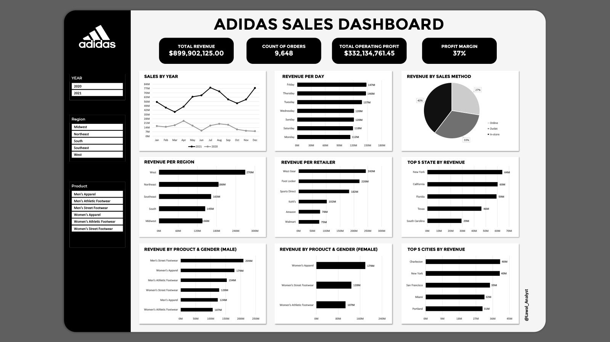

Dashboards built to be used, not just Looked at.
A mix of Public Health Analytics and Business Intelligence Projects, each shipped with full Documentation.

NaijaHealth Disease Surveillance
NaijaHealth Surveillance is an interactive Power BI dashboard that analyzes disease surveillance data across Nigeria. The dashboard provides insights into disease trends, geographic distribution, case outcomes, reporting timelines, and demographic patterns, enabling public health professionals and policymakers to make timely, evidence-based decisions for disease prevention and outbreak response.
Tools: Power BI, DAX, Power Query, Data Modeling, Healthcare Analytics, Data Visualization.

ClinicalPulse Hospital Admissions
ClinicalPulse Analytics is an interactive Power BI dashboard that analyzes hospital admissions, patient outcomes, and healthcare performance across multiple hospitals and wards. The dashboard provides insights into admission trends, length of stay, recovery rates, mortality, and discharge outcomes, enabling healthcare stakeholders to make data-driven decisions and optimize resource allocation.
Tools: Power BI, DAX, Power Query, Data Modeling, Data Visualization.

HealthPulse Patient Demographics
An interactive Power BI dashboard built to analyze patient demographics across Nigeria from 2019–2024. The dashboard provides insights into insurance coverage, patient registration trends, age and gender distribution, blood groups, marital status, and occupation, helping healthcare stakeholders monitor population health and identify demographic patterns through dynamic filtering and intuitive visualizations.
Tools: Power BI, DAX, Power Query

InsureIQ Analytics
The InsureIQ Analytics Dashboard delivers a concise overview of critical insurance metrics including total policyholders, average annual charges, BMI distribution, and regional cost patterns. Built in Microsoft Power BI using Power Query, DAX measures, and dynamic KPI cards, it transforms 1,338 policyholder records into clear, actionable business intelligence — revealing that smokers are charged nearly 4× more than non-smokers, and that the Southeast consistently records the highest average charges across all regions.

Global Adult Mortality Trends
This project analyzes global adult mortality trends using World Health Organization (WHO) data from 2016 to 2021. The dashboard highlights a steady decline in mortality rates while revealing persistent regional inequalities, with Africa consistently recording the highest burden and Europe the lowest. Through interactive visuals such as trend analysis, regional comparisons, and country-level breakdowns, the project provides a clear view of global health progress and remaining gaps.

Global Neonatal Health
This project analyzes global neonatal mortality trends using six years of UNICEF data (2019–2024). The dashboard highlights a gradual decline in Neonatal Mortality Rate (NMR) while revealing persistent disparities across regions, with countries like South Sudan, Nigeria, and Pakistan carrying the highest burden. Interactive maps, trend analysis, and SDG-based risk classification show where urgent intervention is still needed.

MediPulse Analytics
A data analytics project built around a real-world hospital dataset. I connected five data tables — patients, doctors, appointments, treatments, and billing — to uncover operational inefficiencies, patient demographic patterns, and a critical revenue collection gap hiding in plain sight. Using SQL for extraction and Power BI for visualization, I designed a 3-page interactive dashboard for hospital leadership. Tools: SQL · Power BI · Excel · DAX

California Infectious Disease Surveillance
A comprehensive analysis of a decade of public health data (2014–2023), built in Power BI using Power Query for transformation and DAX for incidence rate calculations, converting over 610,000 case records into a diagnostic tool for epidemiological trends. The dashboard identifies regional hotspots such as high-burden Kern County and reveals gender-specific disparities in diseases like Coccidioidomycosis.

Sentix Insights
The Sentix Insights Dashboard delivers a concise overview of brand perception and audience engagement across major social media platforms. Built in Power BI using Power Query, DAX measures, and dynamic heatmaps, it transforms over 700 records into actionable intelligence on public sentiment and posting efficiency.
.jpg)
Call Center
The Call Center Performance Analysis Dashboard provides a comprehensive view of operational efficiency and customer sentiment across 32,941 calls. Built with Power BI and Power Query, it integrates KPIs like response time and call duration with geographic and sentiment data, highlighting drivers such as Billing Questions and volume peaks in cities like Los Angeles.

Pizza Sales Report
An end-to-end look at a year's worth of transactional data to uncover key performance drivers. Built using SQL for data cleaning and Power BI for visualization, it transforms over 21,000 orders into actionable business intelligence — from the revenue-leading Thai Chicken Pizza to the underperforming Brie Carre.

Coffee Shop Sales
A high-performance dashboard analyzing 6 months of coffee shop transactions. Using SQL for deep-dive exploration and Power BI for interactive storytelling, I identified a 30% MoM growth peak in March and pinpointed the "Golden Hours" (8 AM–10 AM) for staffing optimization.

HR Analytics
The HR Analytics Dashboard delivers a concise overview of critical workforce metrics, including total employee count, attrition rates, active employee levels, and job satisfaction ratings. Built in Power BI using Power Query, DAX measures, and dynamic KPI cards, it transforms 1,470 records into clear intelligence on departmental turnover and demographic trends.

Road Accident Analysis
The Road Accident Analysis Dashboard delivers a concise overview of critical safety metrics including total casualties, accident volume, casualty severity, and geographical distribution. Built in Power BI using Power Query, DAX measures, and dynamic KPI cards, it transforms over 195,000 casualty records into intelligence to improve public safety.

BlinkIT Grocery
The Blinkit Sales Performance Dashboard delivers a concise overview of critical retail metrics including total sales, average sales, item volume, customer ratings, and outlet-level performance. Built in Power BI using Power Query, DAX measures, and dynamic KPI cards, it transforms 9,000+ product records and $1.20M in revenue into clear intelligence.

Bike Sales
The Bike Sales Analysis Dashboard provides a concise overview of key sales metrics such as total revenue, total cost, total units sold, profit margin, and customer volume. Built in Power BI using Power Query, DAX measures, interactive charts, and KPI cards, it transforms 113,036 customer records and $85.27M in revenue across five international markets.

Dataslide Sales
A comprehensive and visually intuitive overview of key business performance metrics, including total sales, revenue, total quantity, year-over-year revenue trends, regional revenue distribution, and top 5 company revenue by employee ID. Developed using Power BI with dynamic visuals, bar charts, pie charts, slicers, and KPI cards.

Adidas Sales
This Adidas Sales Dashboard provides a comprehensive overview of performance metrics including total revenue, profit, orders, sales by region, product category, retailer, and time period, enabling quick business insights. Created using Microsoft Excel, leveraging pivot tables, charts, slicers, and KPI cards for interactive analysis.

Dataslid Metropolitan Medical Center
The Dataslid Metropolitan Medical Center Dashboard provides a concise overview of key healthcare metrics such as total revenue, patient volume, average length of stay, and admissions by condition. Built in Microsoft Excel using pivot tables, charts, slicers, and KPI cards, it transforms 55,000+ patient records and $1.4B in revenue into clear insights.

Maximum Commerce Ltd
The Maximum Commerce Ltd Sales Performance Dashboard provides a concise overview of key business metrics, including total revenue, profit, category performance, and geographic distribution. Built in Microsoft Excel, it transforms four years of transactional data (2021–2024) into insights — highlighting 9.68M in revenue and 247.96K in profit.

Sunshine Phone Sales
The Sunshine Intel Phone Sales Performance Dashboard provides a concise overview of key business metrics, including total revenue, profit, brand performance, and geographic distribution. Built in Microsoft Excel, it transforms four years of transactional data into insights highlighting 127.2M in revenue and 44.4M in profit.